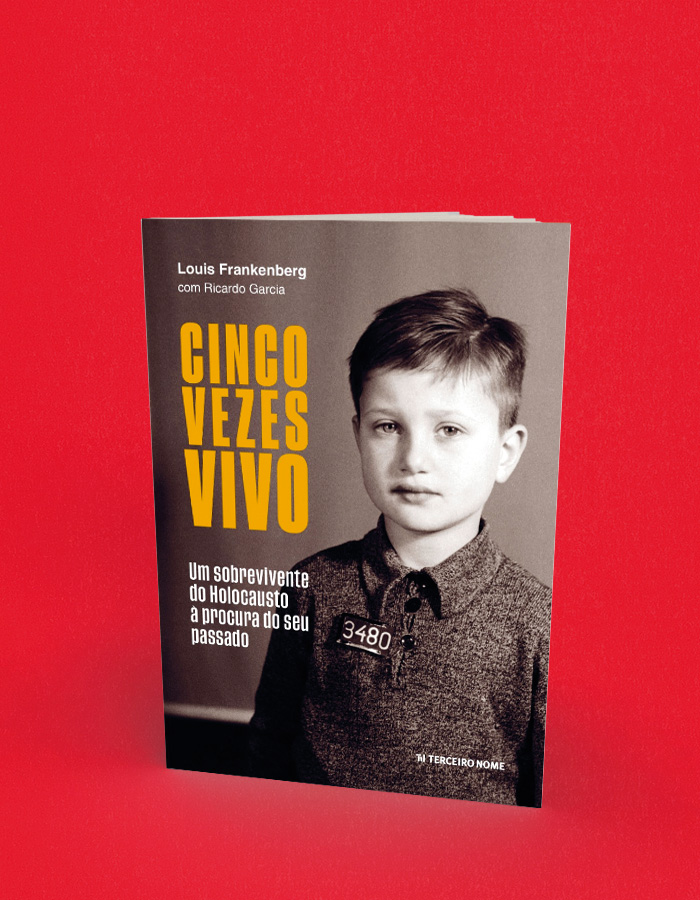

CINCO VEZES VIVO Um sobrevivente do Holocausto à procura do seu passado
A compra acontece no site da livraria, em uma nova aba. Consulte lá os preços e a disponibilidade. Procure pelo título ou ISBN deste livro.
- Autoria / créditos
- Louis Frankenberg com Ricardo Garcia
- ISBN
- 9786587618210
- Páginas
- 448
- Formato
- 16 x 23 cm
- Acabamento
- brochura
Sobre o livro
Louis Frankenberg, um dos poucos sobreviventes do Holocausto vivos no Brasil, resolveu agora contar sua história. Louis tinha apenas 5 anos quando a Holanda, onde nasceu, foi invadida pela Alemanha nazista, em maio de 1940. Dois anos depois, com a “solução final” de Hitler para exterminar os judeus já em marcha, seus pais se separaram dele e de sua irmã e os esconderam em um internato para crianças em Hilversum, no interior do país.
Não adiantou. Denunciado e capturado em 1944, Louis passou pelos campos de concentração de Westerbork, na Holanda, e Theresienstadt, na atual República Tcheca, de onde saiu graças a uma oportunidade milagrosa, em um trem que levou 1200 judeus para a liberdade na Suíça.
Finda a guerra, Louis enfrentou uma penosa saga por famílias de adoção, orfanatos e outras instituições, até ser finalmente entregue aos cuidados de parentes que tinham conseguido fugir para o Brasil antes do Holocausto. Em 1947, com apenas 10 anos, desembarcou em Porto Alegre com sua irmã – que conseguira se manter escondida durante a guerra – para iniciar uma nova vida.
Só muitas décadas depois é que Louis começou a remexer no seu passado, do qual pouco se lembrava. Por 30 anos, vasculhou arquivos, reviu fotografias, leu livros e entrevistou pessoas, num formidável trabalho de historiador. E aos poucos, peça a peça, foi reconstruindo a memória da sua vida e a da sua família, tragicamente assassinada nas câmaras de gás.
O resultado é este livro – escrito com a colaboração do jornalista Ricardo Garcia. Numa narrativa emocionante e documentada, Louis conta como escapou da morte cinco vezes e fala do longo percurso que trilhou para reconstituir sua história – desde as origens da sua família até o recomeço da vida no Brasil.
Não é um livro apenas sobre os horrores do Holocausto. É também uma história pessoal de superação – de como Louis conseguiu ultrapassar os traumas da guerra para se reconciliar com um passado do qual sempre evitara se aproximar. Numa época de incertezas, Cinco Vezes Vivo oferece o testemunho de quem passou por um dos períodos mais sombrios da história mundial mas acabou por encontrar a felicidade ao recompor sua família.
Nascido em Alkmaar, Holanda, em 1936, Louis Frankenberg notabilizou-se no Brasil como pioneiro do planejamento financeiro pessoal. Formado em ciências contábeis e atuariais na PUC de Porto Alegre, iniciou sua carreira comercializando fundos de investimento. Em São Paulo, ocupou cargos de destaque no Banco Itaú, até iniciar seu próprio negócio, na década de 1970. Fundou o Instituto Brasileiro de Certificação de Profissionais Financeiros (atual Planejar), foi colunista da revista Exame e publicou quatro livros: Seu futuro financeiro: você é o principal responsável (Campus Elsevier, 1999), Administre suas finanças (Escala, 2000), Sucesso e independência (Elsevier, 2007) e Guia prático para cuidar do seu orçamento (Elsevier, 2012).
Hoje com 85 anos, Louis Frankenberg vive em São Paulo.
← Voltar ao catálogo